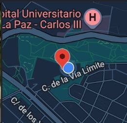
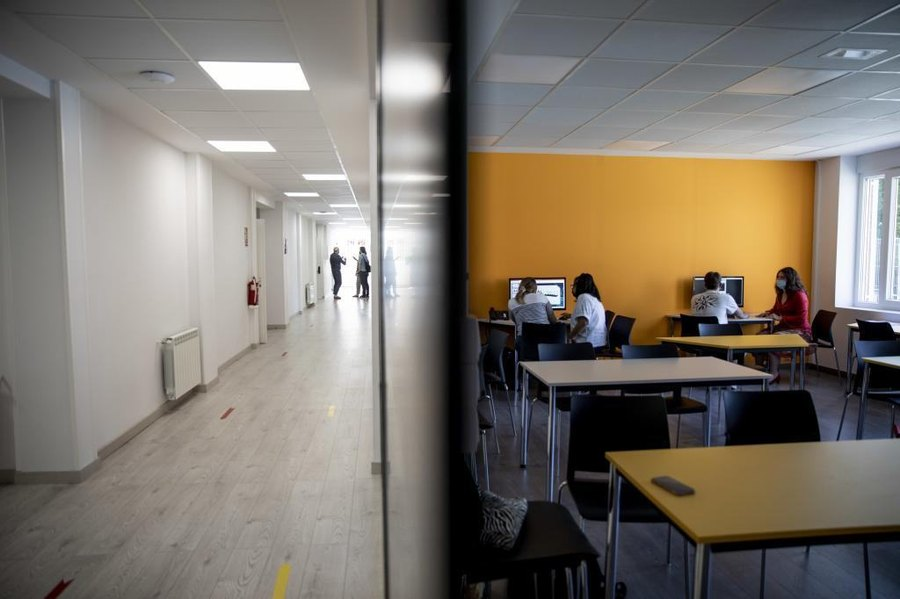

Aulas IES Tetuán de las Victorias
En esta imagen podemos ver el pasillo que conecta las aulas de la planta baja con el comedor.
El centro · Desde mi mirada
Llevo 5 años en el instituto: de SMR a DAM y, ahora, a DAW. Aquí comparto una mirada al centro desde mi recorrido como alumno.
Datos del centro

Una mirada a los espacios del centro.

En esta imagen podemos ver el pasillo que conecta las aulas de la planta baja con el comedor.
Diferentes servicios que ofrece el IES Tetuán de las Victorias
La secretaría del IES Tetuán de las Victorias ofrece toda la información necesaria, horarios y gestión de trámites.
El centro cuenta con una cafetería donde sentarse con distintas máquinas de comida y bebidas.
Cuenta con un amplio espacio al aire libre donde descansar y pasear.
El centro cuenta con distinto equipo y material a disposición de todos los alumnos.
El centro también se entiende mirando lo que hay a su alrededor.
Buena localización y bien comunicado con toda la ciudad.
Buen barrio al norte de Madrid con supermercados y transporte cercano a todas horas.
Te sientes realizado y vuelves con energía a casa.
Una reflexión personal
«Después de tantos años en el centro siento que ya forma parte de mi recorrido como estudiante»